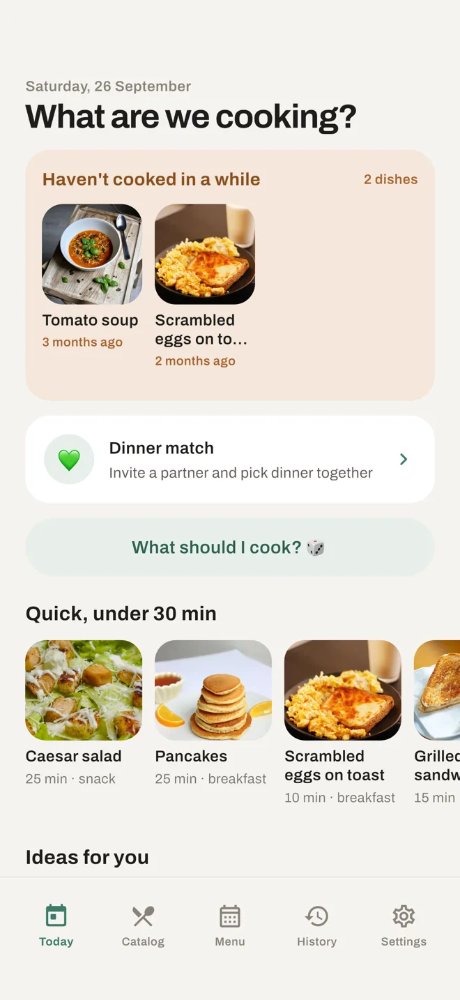
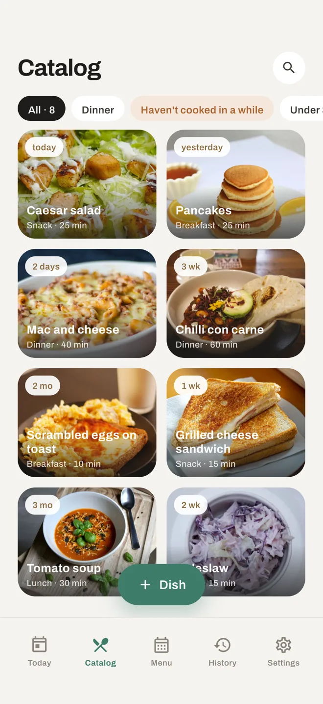
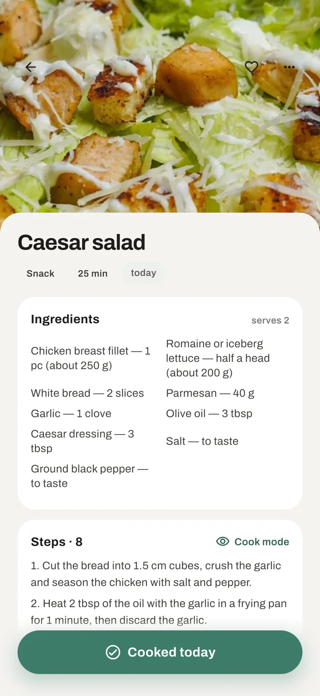
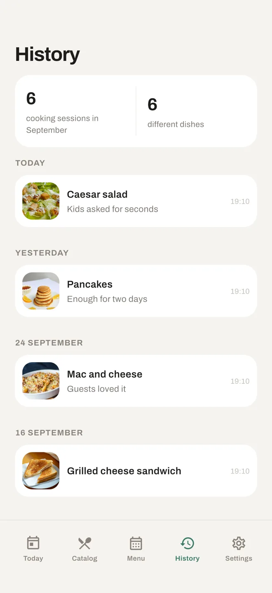
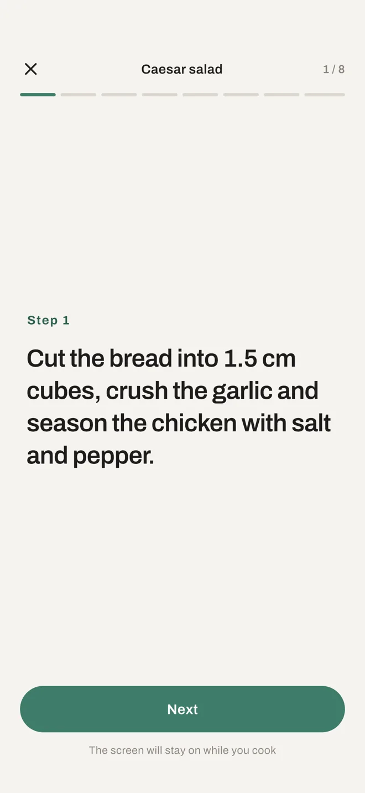
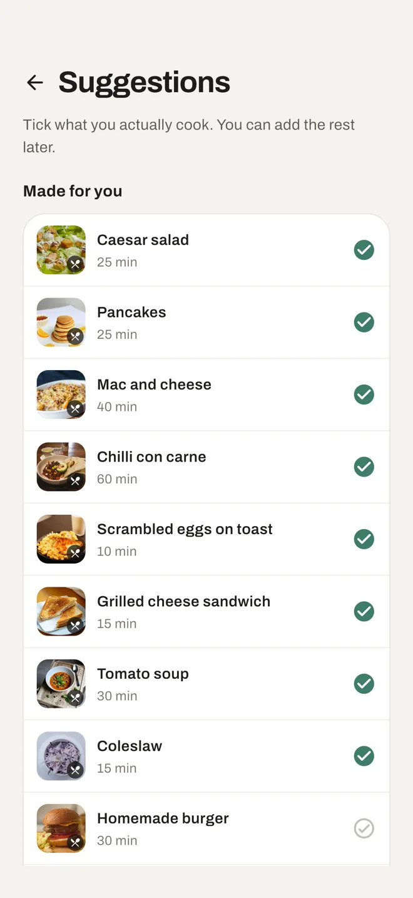

The dishes your family actually cooks
DoMenu is your home menu — not a website full of other people's recipes. Add what you really make, tap “Cooked today”, and the app remembers what has been missing from the table.
iPhone and Android · free to start · no account required

“What's for dinner?”“I don't know. Something.”
Meanwhile the baked fish everyone loves hasn't been on the table in three months. The problem was never a shortage of recipes — a family's repertoire simply has no memory. DoMenu gives it one.
How it works
Three taps, and the app starts remembering for you
Add a dish in 15 seconds
A name is enough. The photo, cooking time, ingredients and steps can come later — or never.
Tap “Cooked today”
One button on the dish. The date, and a note if you want: “less salt next time”.
The app reminds you
“Vinaigrette — 3 months ago.” The “Haven't cooked in a while” block quietly brings back what you forgot.
Your dishes, not someone's recipes
A catalog with photos, categories and cooking time. Search, and filters that match how you actually decide: haven't cooked in a while, under 30 minutes, breakfast.

A recipe that fits on one screen
Ingredients and steps live inside the dish — a cheat sheet you write for yourself, not an essay with a childhood story on top.

History by day
What you cooked and when, with a summary for the month. No charts, no calories, no scoring you didn't ask for.

Cook mode
Big steps, the screen stays on. Because your hands are in the dough and the phone is on the counter.

A starter set, so page one isn't empty
Pick from a curated set of dishes from your own cuisine — twenty taps and the catalog already looks like your kitchen.

Planning
A week of dinners, agreed in advance
Put dishes on the days you already know about, and leave the rest to the app: it fills the empty evenings from what you haven’t cooked in a while. The menu is shared — your partner opens the same week, changes what they want, and the dish of the day shows up on Today with a “Cooked” button.
- Anyone in the family sets or swaps a dish
- Empty days are filled from your own catalog
- A Sunday evening nudge to plan the week
- Any day can be handed over to the dinner match
 Carbonara
Carbonara Baked fishpicked
Baked fishpicked Homemade pizza
Homemade pizza Beef stewpicked
Beef stewpicked Caesar salad
Caesar salad Borscht
Borscht
Premium
Dinner is decided together
Dinner match is a deck of your own dishes, for two. Each of you swipes, the app shows the match. It's a game instead of a text thread that ends in “whatever you want”.
- Only dishes from the catalog you share
- Works asynchronously — your partner can swipe in the evening, the decision waits
- The one dark screen in the whole app, and it earns it
Privacy
What you cook is nobody else's business
No account to start
The catalog, recipes, history and reminders work on the device, offline. Sign in with Apple or Google only when you want family sharing or sync.
No ads, no tracking
No advertising identifiers and no analytics SDKs. Until you sign in, the app sends nothing to a server at all.
Leave whenever you like
Export everything to a file, and delete your account right from the app — no email to us, no waiting.
Questions
Is it another recipe app?
No. Recipe apps start from someone else's recipe; DoMenu starts from the dish you already cook. The recipe is a short note inside it — a cheat sheet, not an article.
Do I have to fill in the whole card?
Only the name is required. Many dishes live as a name, a photo and nothing else, and that is enough for the app to track what's been missing.
Does it work without the internet?
Yes. The catalog lives on the device. Sync and family sharing appear when you sign in and turn on Premium.
How is Premium billed?
An auto-renewing subscription, yearly or monthly, with a 7-day free trial. One subscription covers the family. Manage or cancel it in your App Store or Google Play account settings.
Which languages does the app speak?
English and Russian, with the starter dish sets adapted per cuisine.
DoMenu is almost ready
Leave your email and we'll write you exactly once — the day it lands in the App Store and Google Play.